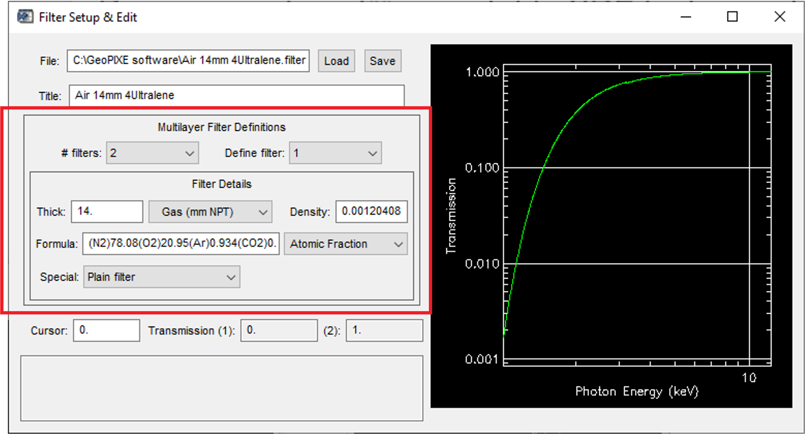

Novel spectroscopies for metallome analysis of trace element:
Hyperaccumulator plants
PhD thesis by
Imam Purwadi
WHOIAM?Click on markers
Enschede, Netherlands
I spent almost two years in Enschede, Netherlands, where I completed my master's degree at the ITC Faculty of Geo-Information Science and Earth Observation, University of Twente. The title of my Master's thesis was "The feasibility of targeting REEs in tailings using satellite remote sensing data: A case study of abandoned mine sites in Bangka Island, Indonesia." This research was a continuation of my undergrad project.
South Sumatra, Indonesia
More than half of my life has been spent in South Sumatra, Indonesia. I did my undergrad at the local public university, and my undergrad thesis project was about using geostatistical analysis for mapping soil pH distribution in one of the mine rehabilitation projects in Bangka Island, Indonesia.
Brisbane, Australia
Currently, I am pursuing my PhD at the Sustainable Mineral Institute, University of Queensland, Brisbane, Australia. My research is focused on developing methods to identify metal(loid)s hyperaccumulating plants that can be used for phytomining, phytoextraction, and phytoremediation.
-
WHYIDO?this research...
-
2012
My first visit to the island.
I observed mining activities but stumbled upon dead corals in metal drum barrels :(
Did you know tin has been mined there since the early 18th century?
It wasn't until 2009 that proper mine rehabilitation regulations were issued.

-
2014
It was a turning point for me.
I wrote my first paper about the island, and it received recognition from The Association of Indonesian Mining Professionals.
This recognition confirmed and validated my decision to delve into the environmental aspects of Bangka Island.
By that time, tin resources had been depleted, but rumors spoke of precious metals in the tin tailings.
I couldn't help but wonder, where were these precious metals, and could we remine them while ensuring proper rehabilitation?
-
2018
Exciting results! here and here
It turns out the tailings do contain precious metals!
But the question arose: Could we mine them using traditional methods without deteriorating the environment?
I explored more environmentally friendly options, like agromining.
However, there was a challenge - no identified plants to do the job!
Tailings:
99% quartz
1% Rare Earth Elements
What's next?
Find hyperaccumulator plants!
Where to start? How to achieve?
July 2019, PhD commenced
Reasons to find hyperaccumulators
-
Exploration becomes harder (Wood 2012)
-
Mining contributes to 2.7% of the world CO2 emission (Holmberg et al. 2017)
-
Mining endangers plant species (Whiting et al. 2004)
Benefits to find hyperaccumulators
-
Hyperaccumulator indicates metal rich soil (Brooks 1988)
-
Hyperaccumulators extract metals from soil (van der Ent et al. 2015) and store carbon in soil (Echevarria et al. 2016)
. -
Some hyperaccumulators become extinct and the remaining needs protection (Erskine et al. 2012)
More background
> Hyperaccumulator coined for Pycnandra acuminata (Jaffré et al. 1976)
> 721 identified hyperaccumulators (Reeves et al. 2017)
> Hyperaccumulator thresholds:
- 10,000 µg g-1 for manganese,
- 3000 µg g-1 for zinc,
- 1000 µg g-1 for rare earth elements and arsenic,
- 300 µg g-1 for cobalt and copper,
- 100 µg g-1 selenium, cadmium, and thallium
Source: Baker & Brooks, 1989; Reeves, 2003b; van der Ent et al., 2013
How?
74% of 721 identified hyperaccumulators are Nickel hyperaccumulator
An easily prepared and deployed test for Ni hyperaccumulator detection exists!
Other reasons
Tool is not the only reasons for the high number of identified Ni hyperaccumulator plants.
Soil concentrations
Wide spread nickel rich soils as the weathering product of ultramafic rocks
Economic value
Nickel is in high demand, while supply is scarce
"As metal prices rise with increased demand, hyperaccumulators are gaining recognition as an alternative means of extracting metals, and so is research in this field."
While rare earth hyperaccumulators were discovered earlier than nickel hyperaccumulators, research progress in the former lags behind that of the latter
A new approach was proposed to expedite the identification of hyperaccumulators
Using a portable X-ray fluorescence instrument to scan herbarium specimens: Rapid analysis, Non destructive test, Abundance Sample
Source: X-Ray Fluorescence Ionomics of Herbarium Collections
How does a portable X-ray fluorescence instrument work?
The instrument shoots X-rays to hit the sample's atoms, and detectors catch any X-rays that come out
The outgoing X-rays from each element are distinct and can be utilized for both quantitative and qualitative analysis
Portable XRF Instruments
Caveats
+ - +
Rare earth XRF peaks often observed but the instrument algorithm failed to report
Why it is important to understand the peak XRF radiation for each element?
XRF is a bulk analysis method that captures not only XRF radiation emitted from the surface of a sample but also includes some XRF radiation originating from beneath the surface that manages to reach the detectors
The depth of penetration: how far the X-ray from the instrument can penetrate the sample, and the escape depth: how far the XRF originated from an atom inside the sample can travel
XRF Method
For herbarium XRF scanning
-
Built-in algorithm
Existing method- 1. Already prepared by the manufacture
- 2. Easy to use
- 3. Mostly designed for rocks or soils
- 4. Assume samples thick enough
- 5. Not suitable for plants
-
Empirical calibration
Existing method- 1. Fast and easy to prepare
- 2. More accurate than manufacturer algorithm
- 3. Sample matrix expected to be the same as the standard
- 4. Only applicable for elements what they are prepared
-
Dynamic analysis
Proposed method- 1. Scientifically reviewed and mature algorithms
- 2. Used to process synchrotron XRF data
- 3. Fully controlled quantification
- 4. Once calibrated, it can be used for any elements
What is Dynamic analysis?
To solve a complex physics equation expressing a theoretical relationship between fluorescence peak intensities and the concentration of elements by providing all parameters required by the equation
In case of monochromatic beam excitation (with energy E0), the relation between the intensity of characteristic X-rays of element i (with energy Ei) and weight fraction of this element is:
Ii(Ei) = [Gε(Ei)ai(E0)I0(E0)/sinα].{1-exp[-ρd(μ(E0)cscα+μ(Ei)cscβ)]}/[μ(E0)cscα + μ(Ei)cscβ]
With: ai = Wiτi(E0)ωipi(1 - 1/ji)
Where
Ii(Ei) – the intensity of the fluorescent radiation of the ith element,
G – the geometry factor,
ε(Ei) – the intrinsic detector efficiency for recording a photon of energy Ei,
I0(E0) – the number of incident photons of energy E0 per second per steradian,
α and β – the effective incidence and takeoff angles, respectively,
ρ – the density of the specimen in g/cm3,
d – the sample thickness in cm,
μ(E0) and μ(Ei) – the total mass attenuation coefficients in cm2/g at energies E0 and Ei, respectively,
Wi – the weight fraction of the ith element,
τi(E0) – the total photoelectric mass absorption coefficient for the ith element at the energy E0 in cm2/g,
ωi – the fluorescence yield of the element i,
pi – the transition probability of the kth line of the element i,
ji – the absorption jump at the K-edge of photoelectric absorption in ith element.
But, most, if not all of the available portable XRF instrument in the markets is polychromatic, how to solve it?
GeoPIXE
A software package developed by CSIRO using Dynamic Analysis for quantitative SXRF data
-
Input
Sample parametersInstrument parameters -
Process
GeoPIXE -
Output
Concentration
-
Input
Sample parametersInstrument parameters -
Process
GeoPIXE -
Output
Concentration
Sample parameters:
- Density
- Thickness
- Chemical composition/formula
Instrument parameters
- X-ray source including: current, angle in, angle out, anode spot, filter thickness, filter density, filter formula
- Detector including material, diameter, distance to window, area, solid angle, resolution, tilt angle, shape, array, absorber layers
Sample parameters
-
0.9 g/cm3
Density
less than water -
C6H10O5
Formula
Cellulose -
?
Thickness
Unknown/to be estimated
Thickness?
An illustration of herbarium XRF scanning: Observe titanium plate beneath herbarium specimen
Safety: The X-ray coming out of the instrument is not fully absorbed herbarium and even the desk. Put metal plates under specimen to absorb the excessive x-ray.
Safety: A portion of the X-ray coming out of the instrument is scattered. Put backscatter shield on the instrument to absorb backscatter radiation.
Remember: The XRF of Ti from Ti metal can travel ~2mm in dry leaves
According to Rafał Sitko and Beata Z, 2011, emission-transmission can be used for determining matrix properties (μm), without the knowledge of the sample composition.
(Its - Is)/It = exp[-μm]
Where:
It: the Ti intensities from the Ti plate alone
Is: the Ti intensities from the sample
Its: the Ti intensities the sample on top of the Ti plate
Ti concentration in leaves < 34 μg/g or even less (Cary and Kubota 1990; Tlustoš et al. 2011), thus not producing significant Ti fluorescence. So, equation can be simplified to:
Its = It exp[-μm]
Thickness?
Relationship between sample area density and transmitted Ti signals
GeoPIXE requirements
-
Input
✓ Sample parameters? Instrument parameters -
Process
GeoPIXE -
Output
Concentration
Reverse engineering
Use certified materials during calibration to reverse engineering the instrument
-
Input
✓ Certified reference materials? Instrument parameters -
Process
GeoPIXE -
Output
✓ Concentration
Instrument parameters
Part 1: Source
Instrument parameters
Part 2: Filters
Instrument parameters
Part 3: Detector
Illustration
A simple fitting one sample: load spectrum, load calculate parameter (yield), do fitting, and open next spectrum
Source parameters x filter parameters x detector parameters = millions iterations
Leasons from reverse engineering
- Better than empirical calibration and built-in algorithm
- Exhausting and time consuming: it took 1 year to get good parameters (error < 5%)
- Prone to errors, if done manually
- work smart not hard; use
pyautoguito automatetypingdanclicking.
Hyperaccumulators in Australia/Queensland
-
Few hyperaccumulator
<10 of 721 -
Metal rich soil
Many metal deposits -
Existing data
> 2000 specimens were scanned
Can we reveal any missed hyperaccumulators from the previous studies with the developed method?
Results
Newly identified hyperaccumulators by the developed methods
- Manganese 15
- Nickel 2
- Cobalt 3
- Zinc 3
- Rare Earth 2
- Selenium 1
The two new REE hyperaccumulators were further confirmed in another study by taking new samples from the field, subsequently measured using ICP-AES.
Spatial distribution of Hyperaccumulators
-
 Mn Layer
Mn Layer -
Co Layer
-
Ni Layer
-
Zn Layer
Hyperaccumulators
Plants exhibiting concentrations of at least an order of magnitude higher than that found in normal plants
- Manganese 10000µg/g
- Cobalt 300µg/g
- Nickel 1000µg/g
- Copper 300µg/g
- Zinc 3000µg/g
- Rare Earth 1000µg/g
- Arsenic 1000µg/g
- Selenium 100µg/g


N < Below detection limits
XRF has a high detection limit
| Element | XRF | ICP-AES |
|---|---|---|
| Manganese | 12517 | 1 |
| Cobalt | 26516 | 115 |
| Nickel | 24684 | 1 |
| Zinc | 23346 | 293 |
| Arsenic | 26865 | Not available |
| Selenium | 26861 | Not available |
| Yttrium | 26837 | Not available |
How to deal with below detection limit values?
Regression on Order Statistics: Lee and Helsel (2005), Lee and Helsel (2005), Dennis R. Helsel and Timothy A. Cohn (1988)
Regression on Order Statistics vs Constant value
Regression on Order Statistics vs Constant value
Determining the threshold between Normal and Hyperaccumulator plants
Hyperaccumulator thresholds in μg/g
| Element | Historical | XRF | ICP-AES |
|---|---|---|---|
| Manganese | 10000 | 1210 | 2850 |
| Cobalt | 300 | 32 | 5 |
| Nickel | 1000 | 280 | 694 |
| Zinc | 3000 | 181 | 7 |
| Arsenic | 1000 | 8 | Not available |
| Selenium | 100 | 10 | Not available |
| Yttrium | Not available | 11 | Not available |
The historical hyperaccumulator thresholds are higher than this study results, so we suggested to not change the historical results because higher values mean safe from false positive
How good is the developed method for different instruments?
3 different instruments
114 leaves
3 different algorithms
The XRF spectra of the three instruments
Mean absolute errors to the highest errors [relative percentage error to highest errors]
| Intrument | Algorithm | Manganese | Iron | Cobalt | Nickel | Copper | Zinc |
|---|---|---|---|---|---|---|---|
| Rocksand | Empirical | 675.1 [5.7%] | 375.4 [32.5%] | 36.8 [1.4%] | 1484.3 [3.2%] | 3.1 [1.7%] | 103.5 [7.7%] |
| independent pipeline | 500.3 [4.2%] | 270 [23.3%] | 25.4 [0.9%] | 636.5 [1.4%] | 3.4 [1.8%] | 65 [4.9%] | |
| Manufacturer | 574.5 [4.9%] | 288.5 [24.9%] | 73.5 [2.7%] | 2930.6 [6.3%] | 8.7 [4.6%] | 131.5 [9.8%] | |
| Goldd+ | Empirical | 395.6 [3.4%] | 375.4 [32.5%] | 36.4 [1.3%] | 1181.9 [2.5%] | 3.1 [1.7%] | 81.9 [6.1%] |
| Independent pipeline | 497.4 [4.2%] | 268.9 [23.2%] | 62.3 [2.3%] | 707 [1.5%] | 2.8 [1.5%] | 132.3 [9.9%] | |
| Manufacturer | 11776.4 [100%] | 1156.5 [100%] | 2719.7 [100%] | 46454.2 [100%] | 188.1 [100%] | 1338.3 [100%] | |
| Tracer 5g | Empirical | 415.5 [3.5%] | 376.6 [32.6%] | 54.7 [2%] | 1018.2 [2.2%] | 3 [1.6%] | 81.9 [6.1%] |
| Independent pipeline | 276.9 [2.4%] | 266.6 [23.1%] | 75.6 [2.8%] | 711.2 [1.5%] | 5.9 [3.1%] | 59.9 [4.5%] |
Benefits of remote sensing technique compared to herbarium XRF
1. No X-ray radiation license needed
2. Applicable from individual plant species to landscape-scale
3. Capable of scanning inaccessible areas
How a leaf reflects light: A visual analysis?
When sunlight shines on a leaf, a portion of this light is reflected.
Metal absorbance bands
Nickel Hyperaccumulator Leaves
- Berkheya coddii 69leaves
- Glochidion bambangan 34leaves
- Glochidion panataran 34leaves
- Phyllanthus rufuschaneyi 35
- Rinorea bengalensis 32leaves
- Rinorea javanica 24leaves
- Actephila alanbakeri 32leaves
- Walsura pinnata 26leaves